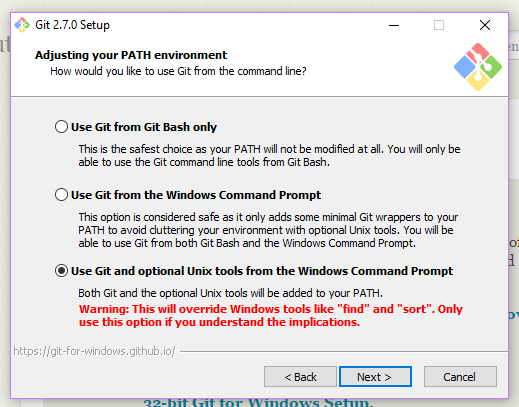

Step-by-Step
Before day 1 of class, you should complete the following checklist
Download Git here
-
WINDOWS USERS:
When installing Git, you can accept all of the default options EXCEPT for the Adjusting your PATH environment option (shown below). Make sure you change the default option on the screen you see below to look just like this picture.
 -
MAC USERS:
When installing Git, you may be asked to download a program called X Code. This is a program written by Apple, and it will be required for you to access your terminal. You should download it from the App Store on your computer. You also will need to change your allowed download sources settings. Find your System Preferences and then click on "Security and Privacy".
Now, toward the bottom of the screen, you will see the settings for Allow apps downloaded from:
Select the option for App Store and identified developers.
Once the download is complete, you're ready to go. Please note that nothing will seem to have changed with your operating system. Git runs in the background, so you won't notice any changes.
-
WINDOWS USERS:
-
Download and install Atom.
This is a straight-forward install, but it does take some time, so be patient.
Install Packages
Once Atom is installed, you'll need to incorporate 3 packages:
- Platformio IDE Terminal
- Atom Live Server
- Emmet
- Atom has a very easy to use package management system. If you're using a Mac, click on the top bar menu option labelled Atom, then select Packages. If you're on Windows, click on the File menu, then select Settings. In the window that opens,
-
On the left, click Install

- In the input, type in the names of the three packages mentioned above (one at a time) and hit the enter/return key.
- The first result (spelled exactly as above) is the correct package. Click on Install to begin the installation.
- These will take a few minutes to install, and you'll need to restart Atom after the install.
Download the Google Chrome browser.
Show up on day one with a serious desire to learn.
That's it!